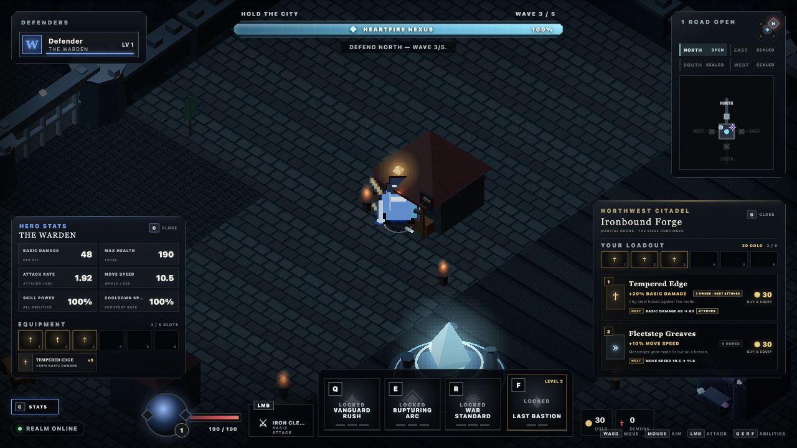

Hold the city
The Heartfire Nexus is always the objective. Gates may fall; the run ends only when the city loses its heart.
SIEGEHEART DEVELOPMENT COMPANION
A 1–4 player dark-fantasy action RPG about defending the Heartfire Nexus, surviving the breach, and carrying the fight back through the invasion rift.
Playable game hosting remains pending a configured Bun/WebSocket host.
LATEST VERIFIED CHECKPOINT · 0.1.16
Every ordinary local ware now answers the champion-specific question before gold leaves the wallet. The compact card shows the exact next Hero Stat result while the accepted panel remains authoritative.
FROM 0.1.15 Two physical shops, four wares, 30-gold pacing, six unrestricted run-only sockets, exact reforges, and the authoritative Attunement ceremony remain intact.

The Heartfire Nexus is always the objective. Gates may fall; the run ends only when the city loses its heart.
Warden, Riftstalker, Ashcaller, and Gravebinder share one control grammar while changing how every horde is solved.
Survive the breach, stabilize the Nexus, then push together through the north road and destroy the Rift Heart.